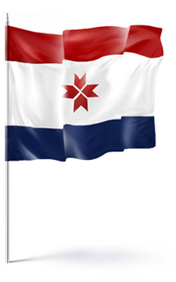

Республика Мордовия (Мордовия Республикась, м., э.), Мордовия (Мордовиясь, м., э.), РМ — республика (гос-во), равноправный субъект РФ. Расположена в центр. части Вост.-Европ. (Русской) равнины, в междуречье Оки и Суры. Столица — Саранск.
По данным Всероссийской переписи населения, проведенной по состоянию на 14 октября 2010 года, численность постоянного населения Республики Мордовия составила 834755 человек. Кроме того, был переписан 541 человек, временно находившийся на территории Республики Мордовия и постоянно проживающий за рубежом. В Мордовии издавна в мире живут русские (около 60% населения), мордва мокша и эрзя (около 30%), татары (около 5%). В общении безоговорочно преобладает русский язык, он же является основным языком обучения в школах и вузах. Национальные языки (мокша, эрзя, татарский) в основном применяются в сфере культуры.
Сегодня Мордовия являет миру образец межнационального и межконфессионального согласия. Все, кто живут здесь, считают Мордовию своим родным домом. Недаром в ноябре 2006 года Мордовия была названа лидером по политической стабильности среди российских регионов, а Глава РМ Николай Иванович Меркушкин был удостоен специальной награды экспертного агентства «Эксперт РА».

Флаг Республики Мордовия является официальным государственным символом Республики Мордовия Российской Федерации. Принят Парламентом Республики 30 марта 1995 года.
«Государственный флаг Республики Мордовия представляет собой прямоугольное полотнище, состоящее из расположенных горизонтально в последовательности сверху вниз трёх полос маренового (тёмно-красного), белого и тёмно-синего цветов.
Верхняя и нижняя полосы по размеру одинаковы. Ширина каждой из них составляет 1/4 ширины флага. Соотношение сторон флага — 1:2. В середине белой полосы располагается восьмиконечная розетка — солярный знак маренового (тёмно-красного) цвета, символ солнца».
Из 8 проектов герба лучшим был признан вариант Николая Дмитриевича Чикринёва, преподавателя изобразительного искусства Мордовского госпединститута. Герб закреплён Конституционным Законом №92-1 от 30 марта 1995 года. Согласно официальному описанию:
«Государственный герб Республики Мордовия представляет собой изображение геральдического щита маренового (тёмно-красного), белого и тёмно-синего цвета с гербом г.Саранска в середине, обрамлённого: золотыми колосьями пшеницы, олицетворяющими традиционную приверженность мордовского народа к сельскохозяйственному труду, перевитыми лентой маренового, белого и тёмно-синего цветов; шейной гривной (национальное украшение) цвета золота, на которой семь орнаментов, означающих количество городов республики, заканчивающейся солярным знаком, восьмиконечной розеткой, символом солнца, красного цвета". ».